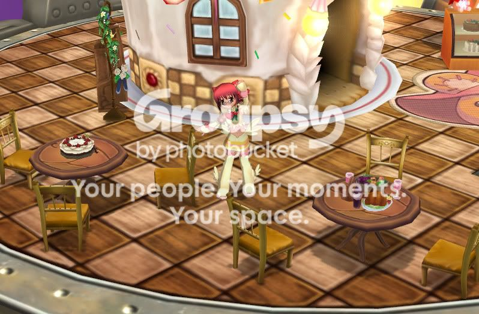
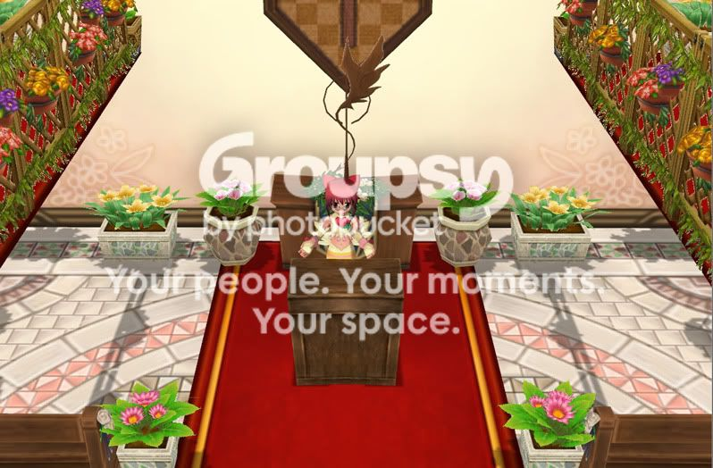

สถานที่ตั้งโบสถ์ รัศมีจากNPCพาไปโบสถ์วาเลนไทน์ ไม่เกิน15ช่องจากตัวNPC โดยจะใช้ชื่อบ้านว่า "โบสถ์สาธารณะกลับมาเปิดอีกแล้วจ้า"
เวลาเปิด : ไม่แน่นอน ตามอารมณ์เจ้าของ แต่เสาร์อาทิตย์ที่จะถึงนี้จะเปิดให้ทั้งวัน(หากไม่ติดล่าแอปหรือไปเก็บเลเวล)
หลังจากโบสถ์สาธารณะได้ฉลองอายุ1ขวบ(เพราะเกิดเมื่อตอนช่วงแต่งงานปีที่แล้ว) ปีนี้ก็จะขอปรับปรุงโบสถ์ขนานใหญ่ให้หรูหรากว่าเดิม ไฮโซกว่าเดิม และอบอุ่นยิ่งกว่าเดิม ซึ่งตอนนี้ได้ปรับปรุงจนเสร็จเรียบร้อยแล้วจ้า
กฏVIPใหม่นิ สิ่งที่VIPทุกท่านจะได้รับคือ สิทธ์ในการเรียกใช้บริการพิเศษจากโบสถ์ได้ 1สิทธ์ (สามารถโอนให้คนรู้จักได้)
บริการพิเศษจากโบสถ์ที่VIPสามารถเรียกใช้ได้
1. จองเวลาโบสถ์ (ตัดหน้าใครก็ได้ที่ไม่ใช่VIP) ข้อนี้หากมีคนกำลังทำพิธีอยู่จะให้VIPจ่อคิวรอหลังจากคนทำพิธีเสร็จเลย
2. ล็อคโบสถ์เพื่อต้อนรับแขกเฉพาะกลุ่ม โดยทางโบสถ์จะค่อยๆรับเพื่อนๆที่ท่านต้องการให้เข้ามาผ่านทางปาร์ตี้เท่านั้นแล้วค่อยๆให้ทยอยขึ้นไป
3. ไม่ต้องโดนบ่นหากเจ้าของโบสถ์หงุดหงิดเวลาไม่อยากจะมาทำพิธีให้ โดยทางเรามีสคริปท์สุดพิเศษสำหรับพวกท่านทุกคนที่มาเยี่ยมโบสถ์ (เพียงแต่ถ้าเป็นคนอื่นขอจะทำให้ตามอารมณ์เท่านั้น)
4. เรียกเจ้าของโบสถ์ให้มาทำพิธีให้ได้ (มันก็ข้อ3แหละเว้ย)
รายชื่อแขก VIP
1. ๐variable๐
2. Ururu
3. ♥Sakubo♥
4. หน้าตาดี
5. Tsubaki
6. TamieGroovier
ร่ายซะยาวมาดูตัวโบสถ์กันดีกว่า~~~
เริ่มต้นหลังจากปีนขึ้นโบสถ์มาจะเจอ ร้านเค้กคุณหมีสาขาย่อยโบสถ์สาธารณะ เปิดหลายสาขามาก บ้านโมจี้(TeaMoTea) ก็มีสาขาอยู่เหมือนกัน

ลานจัดปาร์ตี้เล็กๆที่มีอาหารและเค้กแต่งงานพร้อมสรรพ สำหรับบรรดาแขกที่มางาน หิวมากก็กินบ้านเพิ่มแล้วกันนะ

เก้าอี้นั่งรอเข้าพิธีสำหรับคู่บ่าวสาว มีนกน้อยร้องเพลงกล่อมด้วย ว่าแต่ชั้นจะได้แต่งกับเค้าบ้างไหมนิ

บริเวณสำหรับภาพวาดที่ระลึก อ๊ะว่าแต่ ชั้นไม่ใช่ไทนี่นะ!!!
โดยรวมของภายนอกโบสถ์ในยามอาทิตย์อัสดง เทพธิดาช็อคโกแลตจะคอยให้ความสุขแก่ทุกๆคู่ที่เข้ามาทำพิธี

ทีนี้เข้าไปดูด้านในกันบ้างดีกว่า หลวงพ่อคนเดิมกับการต้อนรับที่เหมือนเดิมในโบสถ์ที่แตกต่างออกไป~~

หลวงพ่อเก็บได้เหมือนเดิมด้วยล่ะ กดใช้แล้วเลือก "เหนื่อย" นะ หากใช้งานเสร็จแล้วช่วยเลือก "กลับไปเป็นสภาพเดิมด้วยนะทุกคน"

ชั้นสองอันหรูหราและแขกผู้มาเยี่ยมงาน ไม่ต้องกลัวว่าจะมาแต่งงานกับแบบเหงาๆอีกแล้วนะทุกคน!!!

ขอบอกว่าทำโบสถ์นี่เหนื่อยอิ๊บอ๋ายเลย เหลือที่ว่างสองที่ขอไปคิดดูก่อนนะว่าจะใส่อะไรดี?
ตอนนี้ต้องการVIPคนที่7คือคนที่จะมาช่วยเปลี่ยนเสียงดนตรีให้โบสถ์ได้ อาจจะนานหน่อยนะเพราะเจ้าของโบสถ์จะขอฟังไปเรื่อยๆเลือกเพลงที่ถูกใจน่ะ ^ w^